目录
一、外观结构示意图
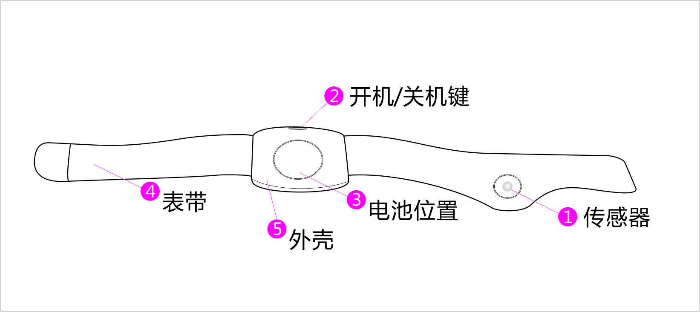图1
1、传感器
2、开关机键
3、电池
4、绑带
5、外壳
二、软件下载
IOS设备请登陆APP store,输入“体温宝”进行搜索，选择体温宝并下载安装
Android设备可登陆http://www.apexto.com/download-center/show/2.html下载或扫描二维码下载安装，或在GOOGLE市场下载安装
三、产品使用说明
1、配带 把产品如图1所示带在宝宝的胳膊内侧，注意传感器一定要置于并贴到腋窝处；如配带位置不对可能造成温度不准确
2、开机 按住开机键，LED会闪一次；再按一次开机键，LED会重复闪烁，此时表示设备可匹配手机
3、连接 打开手机APP，点击SCAN,弹出如图2所示，点击允许打开蓝牙 ,再点击下SCAN,显示可连接的设备名称如图3，并且等蓝牙图标变成蓝色，此时表示设备已连上APP
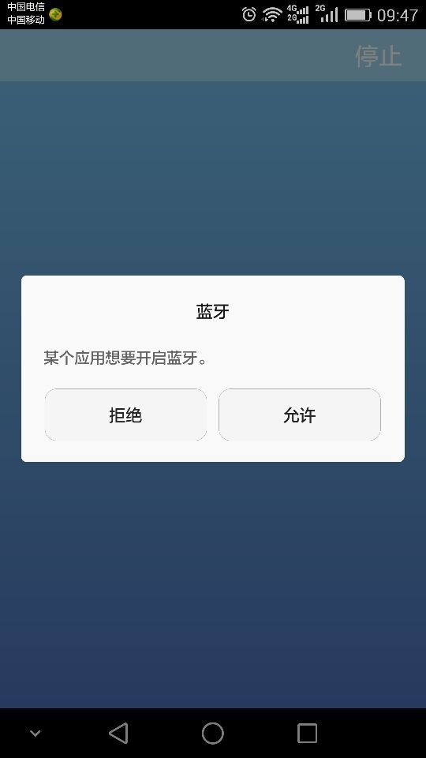
图2
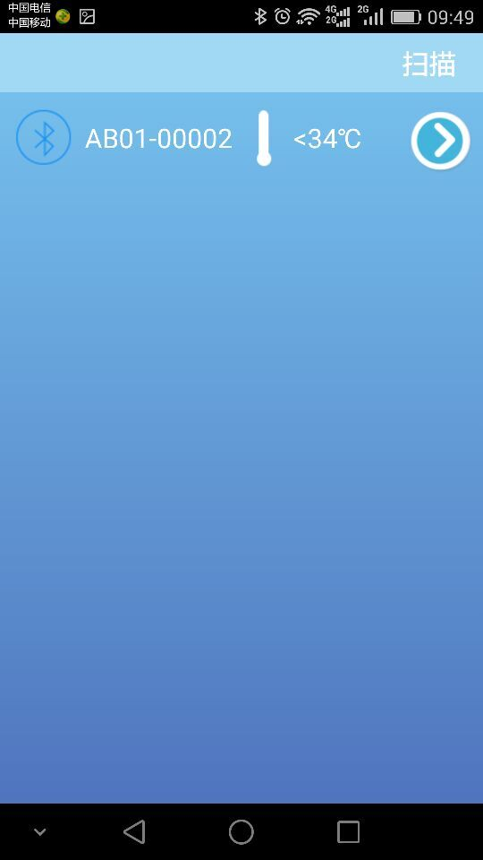
图3
4、查看 选择设备进入用户注册界面如图4，输入名字与选择头像后点击保存键，进入主界面如图5，按住体温显示处左移会拉出实时温度曲线如图6
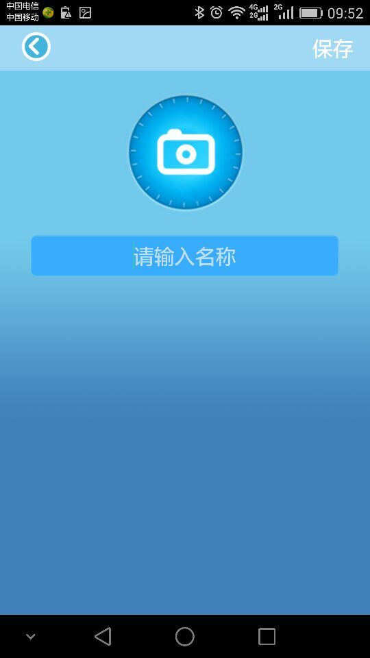
图4
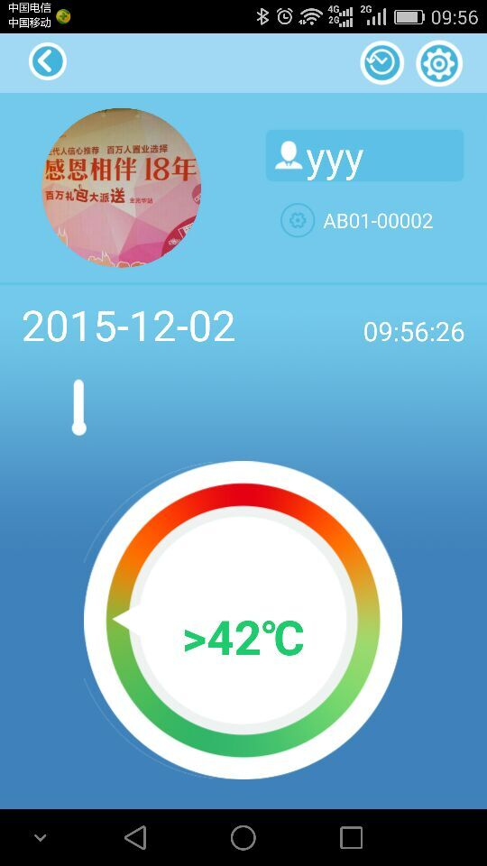
图5
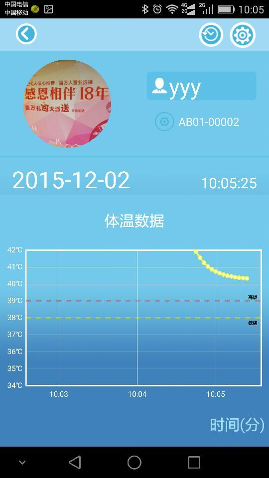
图6
点击用户头像可增加或切换用户如图7；在图5/6界面选择记录图标 弹出如图8,点击刷新按钮弹出如图9界面，数据同步后可在图8界面中查看7天内测试的数据，要日期栏选择需要查看的时间后图表会显示相对应的记录
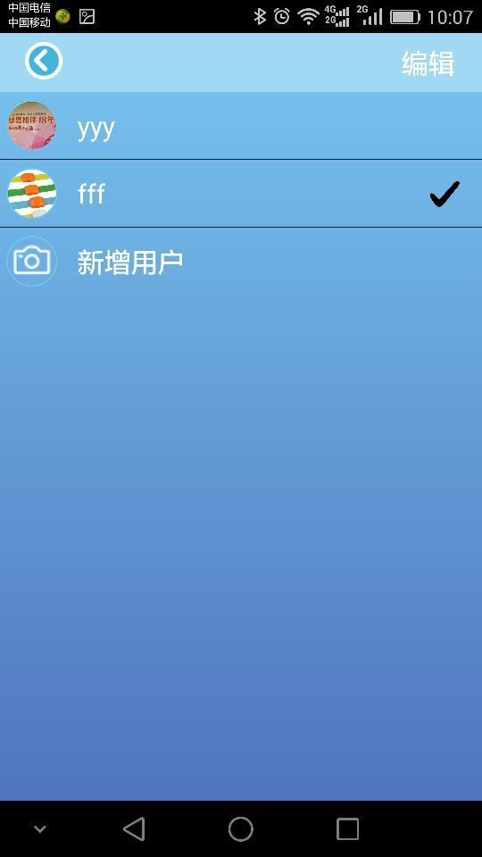
图7
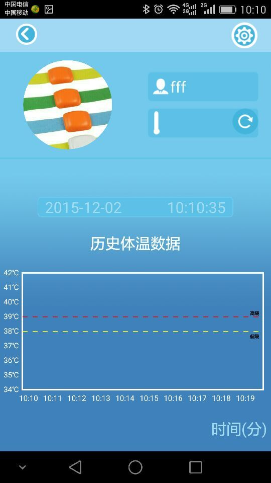
图8
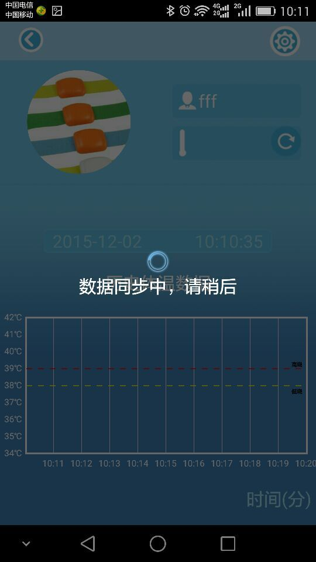
图9
5、设置 点击设置图标，弹出如图10-11所示界面，可设置温度单位，报警温度设定，报警开关，声音大小，报警提示频率等，并可反馈BUG与意见，系统更新。
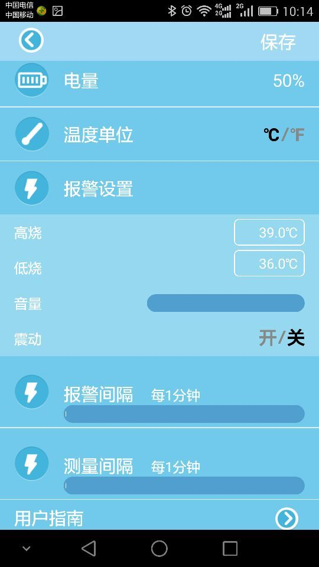
图10
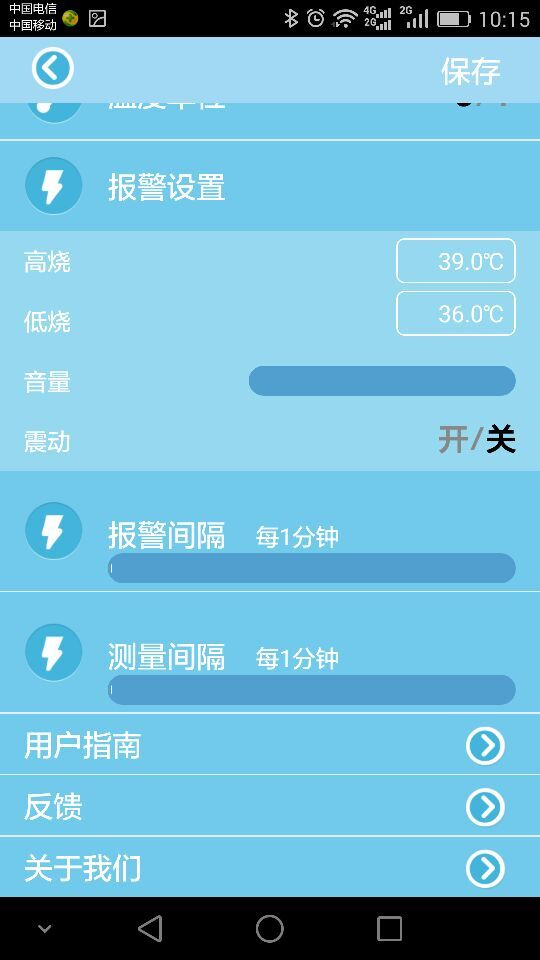
图11
6、关机 产品断开手机蓝牙后，无操作10分钟后或长按开关机键5S会关机，
四、产品参数
产品尺寸： 230*30*12mm
重量： 12g
测量范围： 34℃-42℃
测量精度： +/-0.1℃
通讯方式： BLE4.0
传输距离： <10m
电源： CR2032.3V.225mah
支持平台： IOS7.1或更高，Iphone4S以上;Android4.4以上或更高，硬件带BLE4.0
工作环境： 5℃-50℃ ；相对湿度20-90%
五、故障解决
| 故障现像 | 原因分析 | 解决方法 |
|---|---|---|
| 无法开机 | 电池没电 | 更换电池 |
| 产品损坏 | 请与售后联系 | |
| 无报警提示 | 报警开关未打开 | 在设置中打开报警开关 |
| 系统中静音 | 系统设置 | |
| 无法配对 | 蓝牙开关未打开 | 打开手机蓝牙开关 |
| 手机系统版本过低 | 检查手机系统版本 | |
| 手机硬件不是蓝牙4.0 | 确认手机是否支持蓝牙4.0 | |
| 距离太远 | 确保产品与手机在10M内 | |
| 产品损坏 | 请与售后联系 | |
| 无体温数据 | 配带方式不正确 | 请正确配带 |
| 产品损坏 | 请与售后联系 |
注意
长时间测量时，应注意产品接触皮肤位是否有过敏现象，如出现过敏，请停止使用并送医
本产品测量数据仅供家长参考，不作医疗诊断依据
一般测量时请夹紧胳膊5-8分钟，便于获得更准确的数据
测试后请先退出APP再关机，否则下一次会出现连接不上的问题